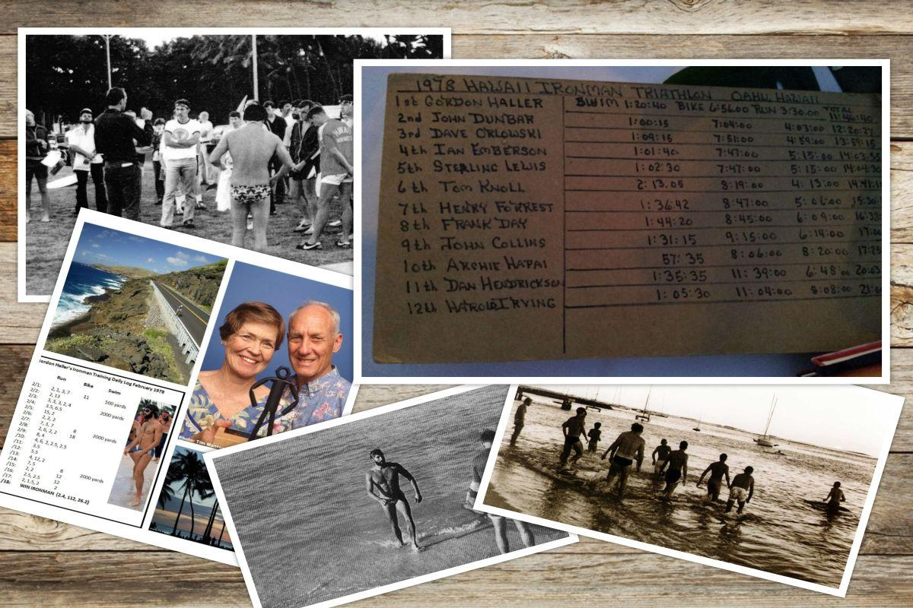
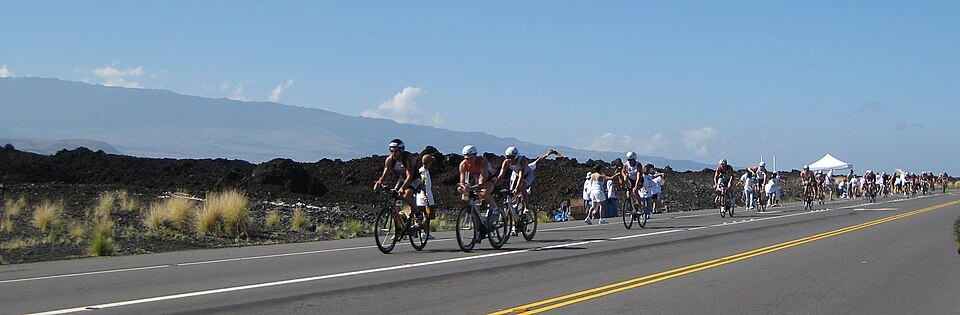
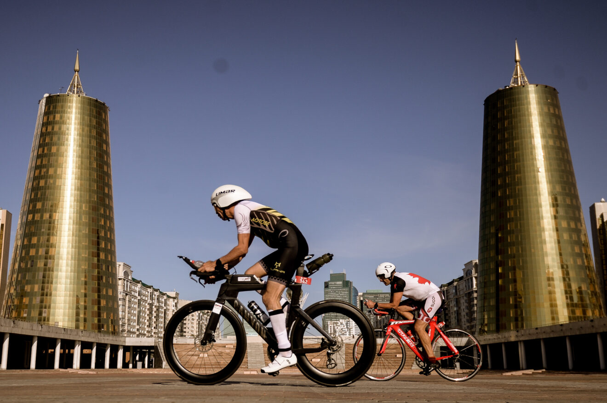
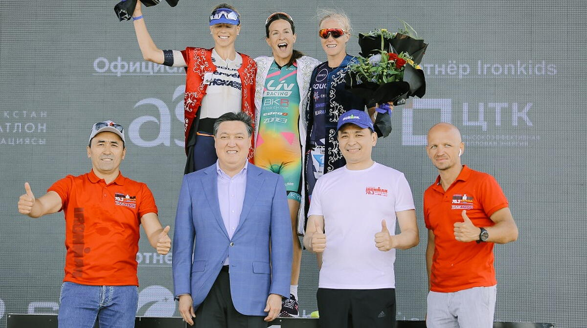
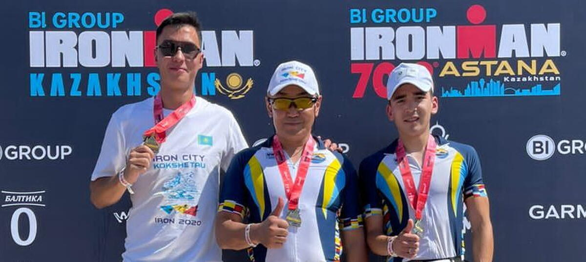

Плавание
3,86 км · 2,4 мили
ОТКРЫТАЯ ВОДАИСТОРИЯ ВЕЛИКОЙ ГОНКИ С 1978 ГОДА
Одна идея. Три дисциплины. Дистанция, которая изменила представление о человеческих возможностях.
Листать историю↓В 1978 году на острове Оаху пятнадцать человек вышли на старт, чтобы выяснить, кто выносливее: пловец, велосипедист или бегун.
Морской офицер Джон Коллинз предложил объединить три уже существовавшие гонки Гонолулу в одно испытание. Так родилась дистанция, которую сегодня знают во всём мире.
Победитель первого старта Гордон Халлер преодолел маршрут за 11 часов 46 минут 58 секунд. Финишировали двенадцать из пятнадцати участников.
История первых участников ↗
Классическая полная дистанция IRONMAN проходит без остановки: плавание сменяется велогонкой, а её — марафоном.
3,86 км · 2,4 мили
ОТКРЫТАЯ ВОДА180,2 км · 112 миль
ОДИН МАРШРУТ42,2 км · 26,2 мили
ДО САМОГО ФИНИШАОт скромного старта на Оаху — к мировой сцене. Несколько моментов, определивших характер гонки.
Первый IRONMAN проходит на Оаху. Джон Коллинз объединяет заплыв Waikiki Roughwater Swim, велогонку Around-Oahu и марафон Гонолулу.
Гонку переносят из Гонолулу в Кайлуа-Кону на Большом острове. Лава, ветер и жара становятся частью её узнаваемого характера.
Джули Мосс ползёт к финишу после того, как её на последних метрах обгоняет Кэтлин Маккартни. Телетрансляция знакомит миллионы зрителей с духом гонки.
На чемпионате мира впервые появляется призовой фонд. Паола Ньюби-Фрейзер начинает серию побед, ставшую рекордной для спортсменки.
Крис Маккормак выигрывает свой второй чемпионат мира в Коне, подтвердив статус одного из самых ярких гонщиков своей эпохи.
Вместе с IRONMAN 70.3 Astana проходит BI Group IRONMAN Kazakhstan — полная дистанция в 226 километров.

Три старта, которые открыли новую главу триатлона в Казахстане — от первой половинки в Астане до полной дистанции.

Астана принимает IRONMAN 70.3. На старт выходят более 1 300 спортсменов из 47 стран. Впереди — 1,9 км плавания по Ишиму, 90 км на велосипеде и полумарафон.

Уже 1 400 атлетов из 50 стран приезжают в Нур-Султан. Среди профессионалов побеждают Нильс Фромхольд и Радка Калефельдт.

В один день проходят IRONMAN Kazakhstan и IRONMAN 70.3 Astana. Алекс Григорьев выигрывает полную дистанцию, а более десяти казахстанских атлетов получают слоты на чемпионат мира.
Даты и результаты: Астана — дебют 2018 ↗Федерация триатлона — 2019 ↗Федерация триатлона — 2022 ↗
Всё возможно.
ANYTHING IS POSSIBLE
Эстафета поколений и городов. Кадры из прошлого и настоящего — в фотографиях, которые вы собрали.